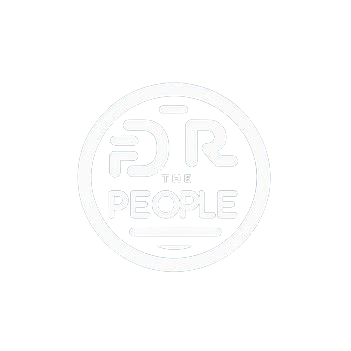

Green economy initiatives
Social welfare schemes
Agriculture
Backward classes
Women empowerment
Senior citizens
Physically Disabled Persons
Youth employment
Health care
Social security welfare schemes
Promotion schemes
Employment schemes
Rural development schemes
Home
Fields
Green economy initiatives
Social welfare schemes
Agriculture
Backward classes
Women empowerment
Senior citizens
Physically Disabled Persons
Youth employment
Health care
Social security welfare schemes
Promotion schemes
Employment schemes
Rural development schemes
Help
Sign Up
SOCIAL SECURITY WELFARE SCHEMES
Pradhan Mantri Shram Yogi Maan-Dhan Yojana (PM-SYM) (Old Age Protection) :
Voluntary and contributory pension schemes
Monthly contribution ranges from Rs.55 to Rs.200 depending upon the entry age of the beneficiary.
Under this schemes, 50% monthly contribution is payable by the beneficiary and equal matching contribution is paid by the Central Government.
Eligibility
Should be an Indian Citizen
Unorganised Workers working as street vendors, agriculture related work, construction site workers, workers in industries of leather, handloom, mid-day meal, rickshaw or auto wheelers, rag picking, carpenters, fisherman’s etc.
Age group of 18-40 years
Monthly income is below Rs.15000 and not a member of EPFO/ESIC/NPS (Govt. funded).
Benefits
After attaining the age of 60 yrs, beneficiaries are entitled to receive monthly assured pension of Rs.3000/-.
On death of the beneficiary, spouse is eligible for 50% monthly pension.
If husband and wife, both joins the scheme, they are eligible for Rs. 6000/- monthly pension jointly.
National Pension Scheme for Traders and The Self-employed Persons (NPS) :
Voluntary and contributory pension schemes
Monthly contribution ranges from Rs.55 to Rs.200 depending upon the entry age of the beneficiary.
Under this schemes, 50% monthly contribution is payable by the beneficiary and equal matching contribution is paid by the Central Government.
Eligibility
Should be an Indian Citizen
Shopkeepers or owners who have petty or small shops, restaurants, hotels, real estate brokers etc.
Age group of 18-40 years
Not covered in EPFO/ESIC/PM-SYM
Annual turnover not more then 1.5 Crore in rupees
Benefits
Under the schemes, beneficiaries are entitled to receive monthly assured pension of Rs.3000/- after attaining the age of 60 years.
Pradhan Mantri Jeevan Jyoti Bima Yojana (PMJJBY) :
Pradhan Mantri Jeevan Jyoti Bima Yojana (PMJJBY) is an insurance scheme offering life insurance cover for death due to any reason.
The scheme is offered by banks/post offices and administered through life insurance companies.
All individuals who are account holders of participating banks/ post office in the age group of 18 to 50 years are entitled to join.
Eligibility
Should be an Indian Citizen
In the age group 18 to 70 years
Having Jandhan or saving bank account with Aadhaar
Auto-debit from bank account on consent
The applicant must hold an individual bank / post office account.
Benefits
The risk coverage under the scheme is Rs. 2 lakh for accidental death and full disability and Rs. 1 lakh for partial disability.
Premium @ 330/- year.
Atal Pension Yojana :
Atal Pension Yojana (APY), a pension scheme for citizens of India, is focused on the unorganised sector workers.
Under the APY, guaranteed minimum pension of Rs.1,000/- or 2,000/- or 3,000/- or 4,000 or 5,000/- per month will be given at the age of 60.
The Atal Pension Yojana was launched on 9th May 2015.The Scheme is being implemented with effect from 1st June 2015.
Eligibility
Should be an Indian Citizen
Age group of 18-40 years
Having bank account linked with Aadhaar.
From 1st October, 2022, any citizen who is or has been an income-tax payer, is not eligible to join APY
Benefits
The contributor on his choice, can attain a pension of 1000-5000 rupees, or he can also get an accumulated sum of the pension after his death.
The accumulated amount will be given to the spouse or if the spouse is dead as well then to the nominee.
PDS:
The Public distribution system (PDS) is an Indian food Security System established under the Ministry of Consumer Affairs, Food, and Public Distribution.
PDS evolved as a system of management of scarcity through distribution of food grains at affordable prices.
PDS is operated under the joint responsibility of the Central and the State Governments.
Eligibility
Should be an Indian Citizen
All families below the poverty line is eligible
Any family which does not have a member between ages 15 and 59 years of age.
Any family which has a disabled member is also eligible to avail of benefits under Pradhan Mantri Awas Gramin Yojana
Those who do not have a permanent job and only engage in casual labour.
Benefits
35 kg of rice or wheat every month, while a household above the poverty line is entitled to 15 kg of food grain on a monthly basis.
Being implemented as ONORC to enable migrant workers to receive the food grains wherever they are working.
Health Insurance Scheme for Weavers (HIS) :
Health Insurance Scheme was implemented by Ministry of Textiles till 30.09.2014 to provide health care facility to handloom weavers.
The healthcare facility was provided through a Health Insurance Company which was selected by open tender procedure.
Only the annual premium was paid to the Health Insurance Company as per the actual enrolment done.
The health insurance claims submitted by the weavers were paid directly by Health Insurance Company.
Eligibility
Should be an Indian Citizen
The weaver should be earning at least 50% of his income from handloom weaving
All weavers, whether male or female, are eligible to be covered under the “Health Insurance Scheme”.
Benefits
The beneficiaries would avail a package of Rs 15,000 that includes both pre-existing diseases and new diseases.
The annual health cover for a family of four is Rs.15,000/- out of which substantial provision of Rs. 7,500/- has been kept for OPD.
Pradhan Mantri Kisan Mandhan Yojana :
PMKMY Scheme aims to provide social security net for the Small and Marginal Farmers (SMF) by way of pension
Pension will be paid to the farmers from a Pension Fund managed by the Life Insurance Corporation of India.
Under this scheme, the farmers would receive a minimum assured pension of Rs 3000/- per month after attaining the age of 60 years
And if the farmer dies, the spouse of the farmer shall be entitled to receive 50% of the pension as family pension
Eligibility
Should be an Indian Citizen
For Small and Marginal Farmers
Entry Age between 18 to 40 years.
Cultivable land up to 2 hectares as per land records of the concerned State/UT
Benefits
Assured pension of Rs. 3000/- month.
Voluntary and Contributory Pension Scheme.
Matching Contribution by the Government of India.
Self Employment Scheme for Rehabilitation of Manual Scavengers :
The Self Employment Scheme for Rehabilitation ofManual Scavengers (SRMS) is a Central SectorScheme of the Ministry of Social Justice and Empowerment (MSJE).
The scheme was introducedin January 2007, to rehabilitate the identified manualscavengers in alternative professions by the end of FY2008- 09.
The scheme was subsequently revised in November 2013 and in 2020-2021.
The objective of SRMS is to provide assistance to the identified manual scavengers and their dependants for their rehabilitation
Eligibility
Should be an Indian Citizen
Identified manual scavengers, one from each family, (as defined in para 2.3.1) would be eligible for One Time Cash Assistance (OTCA) of Rs. 40,000/- or any such amount as OTCA as revised from time to time.
Benefits
Subsidy on Loans to manual scavengers/ sanitation workers and their dependents for sanitation related projects (for projects upto Rs. 15 lakh).
Onetime cash assistance of Rs.40000/- to identified manual scavenger.
Credit linked back-end capital subsidy upto Rs. 3.25 lakh with provision of concessional Loans for project cost upto Rs. 15.00 lacs.
Skill Development Training upto two years with stipend of Rs.3000/- per month to the manual scavenger/dependent who opts for such training.
Coverage of Manual Scavengers for Health Insurance under Ayushman Bharat (PM-JAY) Yojana
STAKEHOLDERS